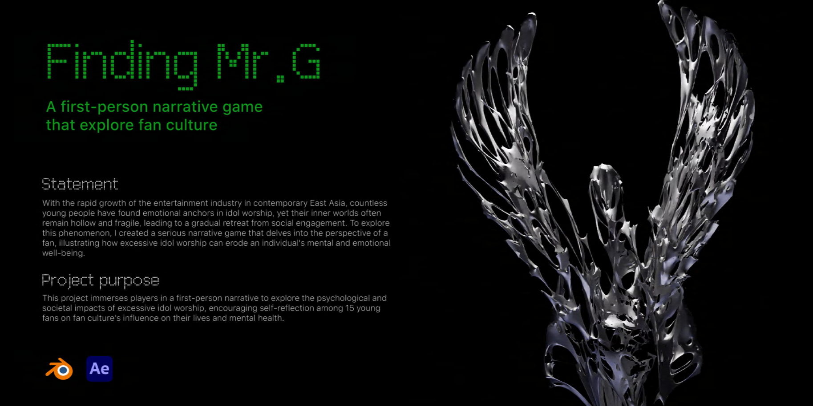
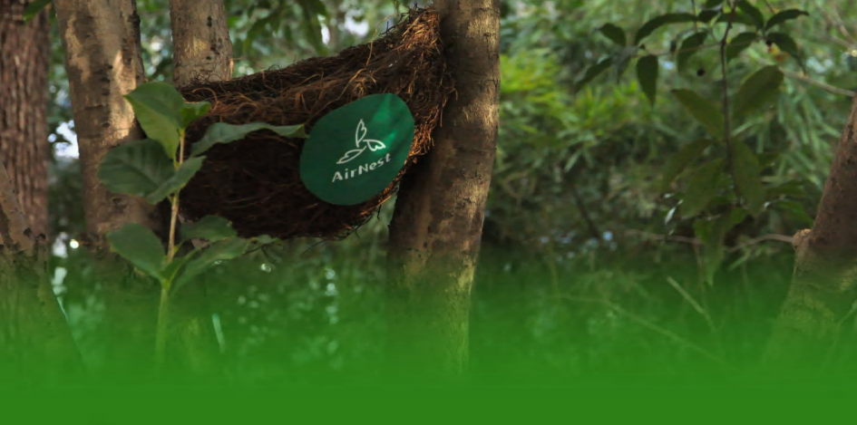
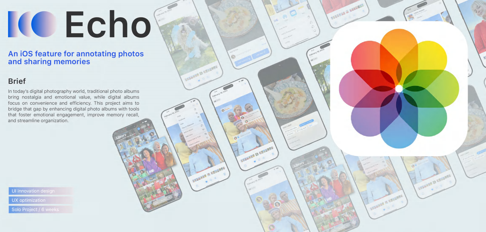
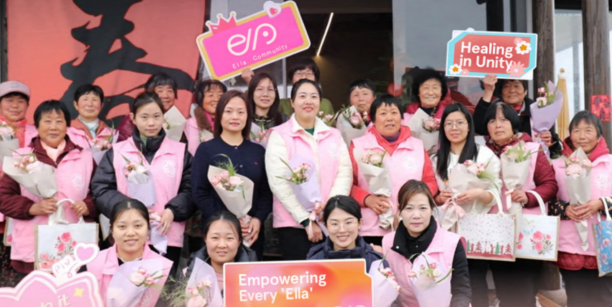

Finding Mr.G
A first-person narrative game.

AirNest
Protecting urban birds by turning waste into bird-friendly features.

Echo
An iOS feature for annotating photos.

Ella
A service system to improve quality of life for breast cancer survivors.